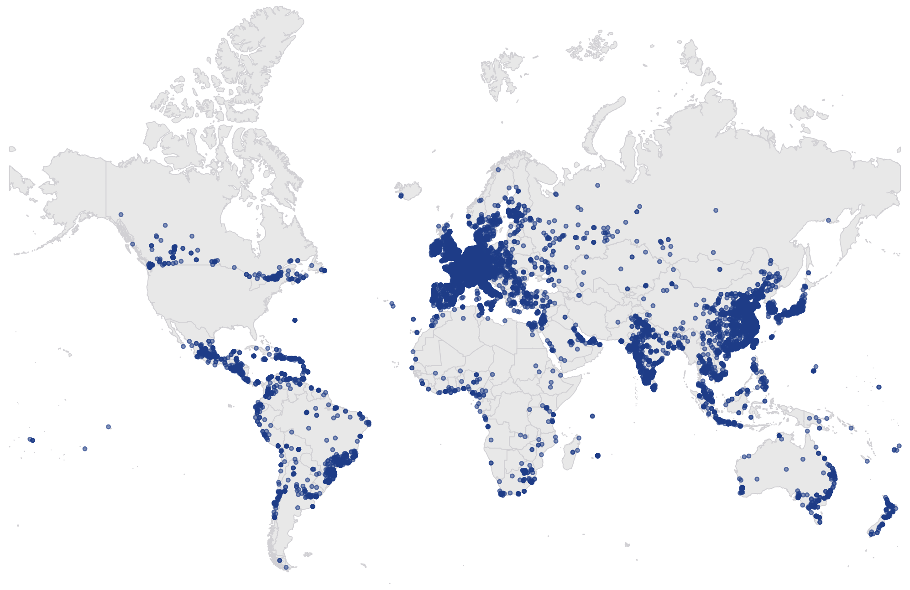
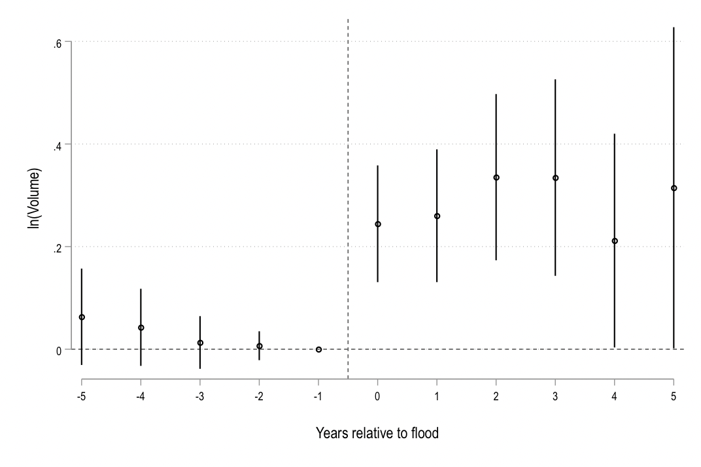
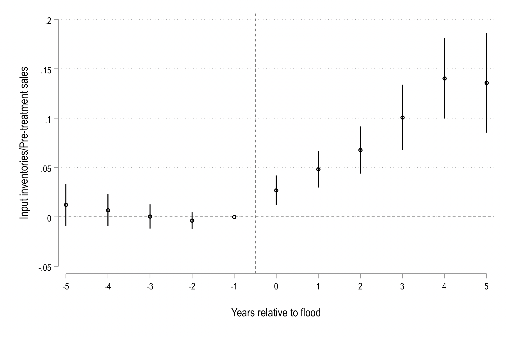
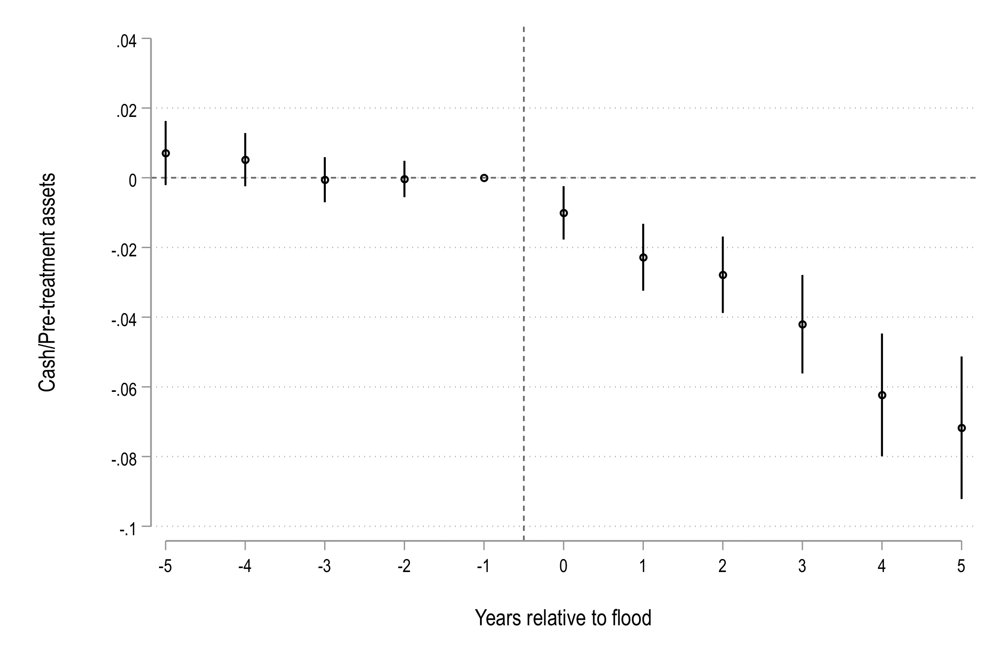
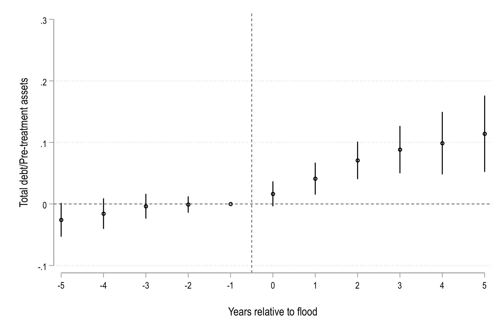

Working papers
-
Building Corporate Resilience to Supply Chain Disruptions
I examine how firms build resilience against supply chain disruptions to hard-to-replace inputs. Firms hold more inventory, less cash, and higher leverage, and update these policies after shocks that reveal new information about risk.
Abstract. I examine how exposure to disruption risk from hard-to-replace inputs affects corporate resilience investments and firms' learning about that risk. Using a new dataset on 11,000 foreign suppliers to U.S. manufacturers, I show that firms with fewer alternative suppliers hold more inventory and less cash, and have higher leverage. Exploiting natural disasters that disrupt suppliers, I find that firms update their beliefs about disruption risk and make persistent changes to corporate policies in response. Consistent with learning, the response is strongest after first-time shocks. Finally, firms with higher inventory buffers are better protected against performance losses when disruptions occur.

Supplier map 
ln(Volume) 
Inventories/Sales 
Cash/Assets 
Debt/Assets -
Why do Startups Become Unicorns Instead of Going Public?
We propose an efficiency explanation for unicorns. Startups relying heavily on organization capital stay private to protect it from expropriation until their position is sufficiently secure.
Abstract. Unicorns are startups that choose to stay private even though they are large enough to go public. We propose an efficiency explanation for their existence. Startups relying highly on organization capital are more vulnerable to expropriation of their organization capital if they go public before their position is sufficiently secure. Our main empirical findings are that shocks to the fragility of organization capital decrease the IPO likelihood, unicorn status enables startups to stay private longer by giving them access to new sources of capital, and unicorns and their industries have higher organization capital intensity than other startups.
Media: Harvard Law Forum on Corporate Governance, NBER Digest.
Registered reports
-
Global Financial Markets and Multinational Company Investment
Publications
-
Economic Policy Uncertainty and Multinational Companies
Abstract. We study the impact and propagation of economic policy uncertainty (EPU) via subsidiary networks of U.S. multinational corporations (MNCs). We find that increases in host-country EPU lead to significant decreases in MNC valuations. We document heterogeneous effects across important firm- and country-level dimensions such as intangible capital intensity, financial constraints, and country institutional quality. Higher EPU in host countries is associated with a decline in the growth of local MNC subsidiary assets and employment. We find no significant average spillover effects of host-country EPU on MNC subsidiaries in other countries and some evidence of negative spillover effects among vertically linked subsidiaries.
-
Unintended Real Effects of EDGAR: Evidence from Corporate Innovation
Abstract. We study the real effects on innovation of a transformative change in corporate disclosure dissemination, the implementation of the SEC's EDGAR system. On the one hand, increased disclosure dissemination can lower firms' cost of capital, thereby stimulating innovative activity. On the other hand, increased dissemination can exacerbate proprietary disclosure costs, reducing firms' incentives to innovate. We show that treated firms reduce innovation investment following EDGAR's implementation. In contrast, EDGAR reporting firms' innovation investment cuts are met with an increase in innovation investment by their technology rivals. Consistent with an increase in proprietary costs, EDGAR-filers disclose less about their innovation activities. We also find evidence of a redistribution of innovative activity from public to private firms not subject to EDGAR disclosure requirements.
-
Global Banks and Systemic Risk: The Dark Side of Country Financial Connectedness
Abstract. We study the relation between country financial connectedness and systemic risk for U.S. banking organizations with global exposures. Using supervisory data on U.S. banks' foreign claims, we find that banks with exposure to countries with globally connected financial markets contribute more to U.S. systemic risk. These adverse effects are amplified by systemically important and less capitalized banking organizations. Consistent with the idea that financial connectedness is a conduit for risk transmission, risk spillovers to the U.S. from foreign financial crises are magnified when the countries in crisis are well financially connected.
-
Foreign Investment, Regulatory Arbitrage, and the Risk of U.S. Banking Organizations
Abstract. This study investigates the implications of cross-country differences in banking regulation and supervision for the international subsidiary locations and risk of U.S. bank holding companies (BHCs). We find that BHCs are more likely to operate subsidiaries in countries with weaker regulation and supervision and that such location decisions are associated with elevated BHC risk and higher contribution to systemic risk. The quality of BHCs' internal controls and risk management plays an important role in these location choices and risk outcomes.
-
Property Rights Institutions, Foreign Investment, and the Valuation of Multinational Firms
Abstract. We study the effect of property rights institutions in host countries, the institutions protecting investors from expropriation by host country agents, on the geographic structure and valuation of US multinational corporations (MNCs). We provide firm-level evidence that better property rights attract investment from MNCs. We disentangle the effects of the Stulz (2005) "twin agency problems" in the context of foreign direct investment and show that our results are not driven by legal institutions protecting investors from expropriation by corporate insiders. Further, we show that changes in the quality of property rights in locations where MNCs operate have material impact on MNCs' valuations.